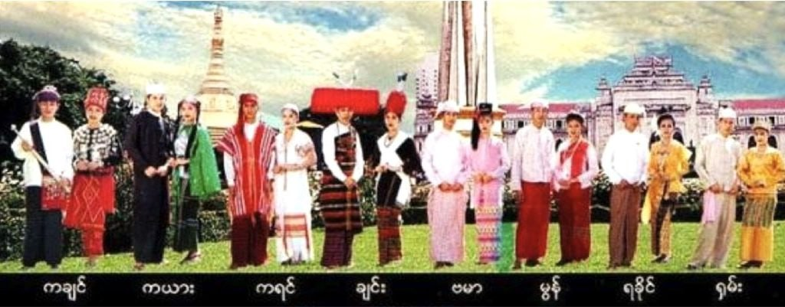

Myanmar Culture
Myanmar Nationalities
Myanmar comrises eight major national ethic races with some 135 ethnic groups. The national races are Kachin, Kayah, Kayin, Chin, Burmerse, Mon, Rakhine and Shan. The Burmese form the largest national race constituting about 70% of the whole population. Here are the capital city for each nationality: Burmes=Naypyitaw, Kachin=Myitkyina, Kayah=Loikaw, Kayin=Hpa-An, Chin=Hakha, Mon=Mawlamyine, Rakhine=Sittwe, and Shan=Taunggyi.
Specific Photos for Each Nationality
Kachin
Kayar
Kayin
Chin
Burma
Mon
Yakhine
Shan
Burmese Language
Myanmar Number

Myanmar Alphabets
The Republic Union of Myanmar is a country of many languages.There are over one hundred languages and dialects spoken by the many people of Myanmar. Burmese, or Myanmar, belongs to the Lolo-Burmese sub-branch of the Tibeto-Burmese branch of the Sino-Tibetan language family. It is the official language, spoken by the majority of the population in Myanmar. In 2022, there were about 38 million people who spoke Burmese as a first language. There are also thought to be another 10 million who speak it as a second language. In the Burmese language, there are 33 alphabets. For Myanmar language, it is important to learn the use of tones.There are four tones and these are Creaky, which is the short and falling tone that ends with a weak closure of the glottis, Low tone, this is the long and level that may fall or rise at the end, a High tone, that is a long tone that starts high then falls slowly from the high to low pitch and lastly, we have the Stopped tone, it is a very short, high tone ending in a glottal stop.
Religions in Myanmar
This passage discusses the complex religious and ethnic tensions in Myanmar, focusing on the role of Buddhism in promoting violence against the Muslim Rohingya minority. It highlights that while the majority of the population is Buddhist, there are significant populations of Christians, Muslims, and Hindus among ethnic minorities. The British colonial policy of the 20th century is mentioned as having created a violent legacy that persists today. The passage describes how the majority Buddhist Burmese population has forcibly displaced and persecuted the Rohingya, leading to a large refugee crisis. The violence and destruction of mosques have been supported by factions within the Buddhist monastic community, with some monks participating in anti-Muslim demonstrations. Buddhism has been used to justify these actions, with some claiming that violence is acceptable in defense of their religion. The passage also mentions the economic and legal oppression of Muslims through campaigns such as the "Buy Buddhist" movement and the promotion of anti-Muslim laws by Buddhist monks. However, it emphasizes that not all Buddhists support violence and discrimination. Some Buddhist leaders promote peace, coexistence, and interfaith understanding, and there are instances where monks have sheltered and protected Muslims during times of violence. The traditional beliefs of most ethnic races involve spirit worshipping called animism. For example, some Buddhists tend to believe that spirits(nats) dwell in natural objects or phenomena. There are nat shrines across the country where people can make offerings for protection or success. Overall, the passage highlights the complexity of the religious and ethnic conflict in Myanmar, where different interpretations of Buddhism play a role in both promoting violence and fostering efforts for peace.
Religions Names
Buddhism
Christianity
Islam
Animism
Hinduism
Myanmar Places
Myanmar, a country rich in history, culture, and tradition, offers a captivating mix of modernity and ancient wonders. The landscape is adorned with scattered pagodas, particularly notable in Bagan, and these sacred structures are found even in the heart of cities. Alongside pagodas, Myanmar boasts breathtaking natural landscapes and beautiful beaches, making it an alluring destination. The country is also a significant hub for Buddhism, housing numerous Buddhist temples that attract followers. Despite certain areas still being restricted, there are incredible places open for exploration. As tourism is growing, it is advisable to visit now before it becomes overly crowded. Myanmar presents an array of enchanting destinations to discover.
Famous Places
Shwedagon
(Click Here To See Lcation)Kyaiktiyo
(Click Here To See Lcation)Mahamyatmuni
(Click Here To See Lcation)Zalon Pyi Taw Pyan
(Click Here To See Lcation)Sri Ksetra
(Click Here To See Lcation)Hanlin
(Click Here To See Lcation)Beikthano
(Click Here To See Lcation)Mrauk-U
(Click Here To See Lcation)Shwe Mote Daw
(Click Here To See Lcation)Kuthodaw
(Click Here To See Lcation)Pindaya Caves
(Click Here To See Lcation)Mandalay
(Click Here To See Lcation)Inlay Lacke
(Click Here To See Lcation)Myanmar Lions
Myanmar Language
Religions in Myanmar
Famous Places in Myanmar
Myanmar Clothes
Myanmar Food
Myanmar Art
Culture
&
Traditions